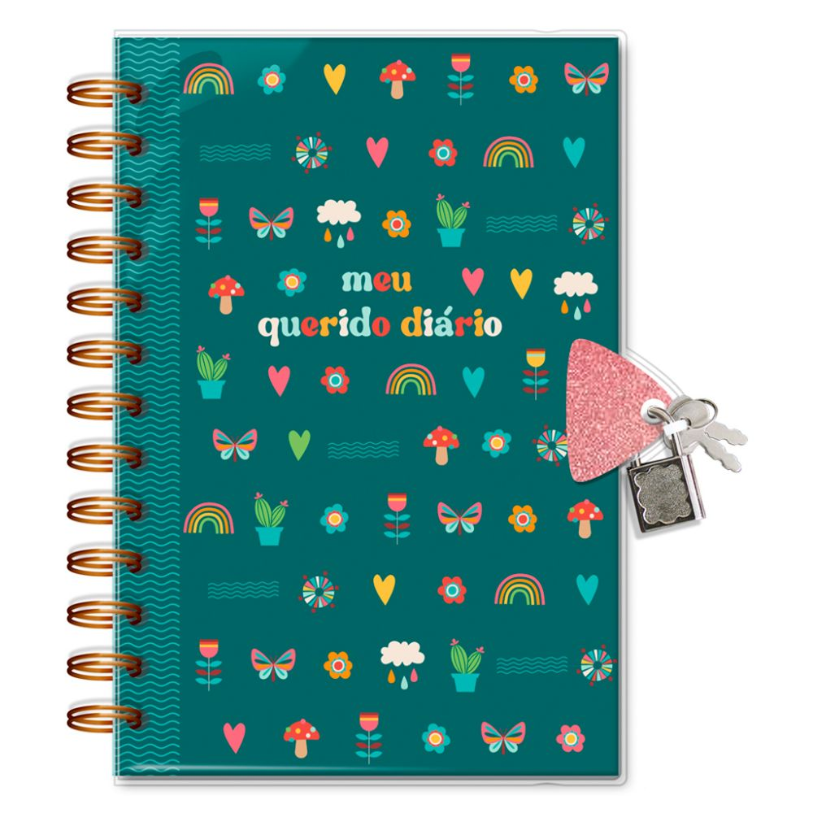

O BLOG B.S é como se fosse o meu diario, meu refugio,como nao tem meu nome vou poder me abrir com vecês e alguns podem se indentificar, pois como minh mãe diz, nenhuma experiencia é unica nao é mesmo. vou postar todo dia sobre algum acontecimento da minha vida! Você vai se sentir em uma conversa com suas amigas!
